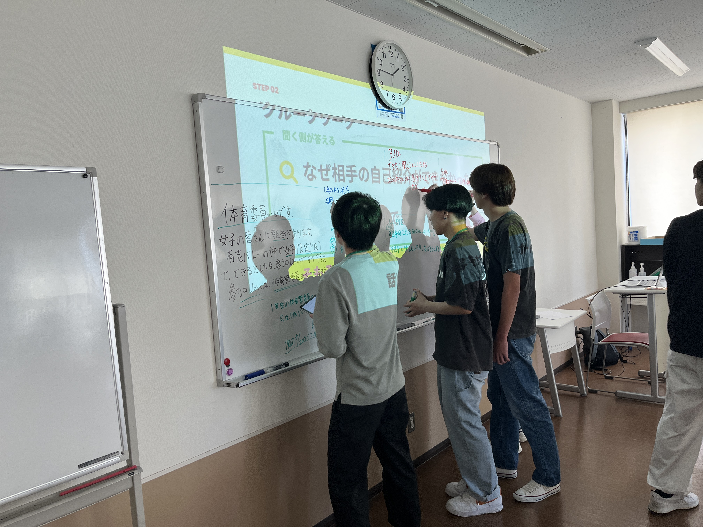
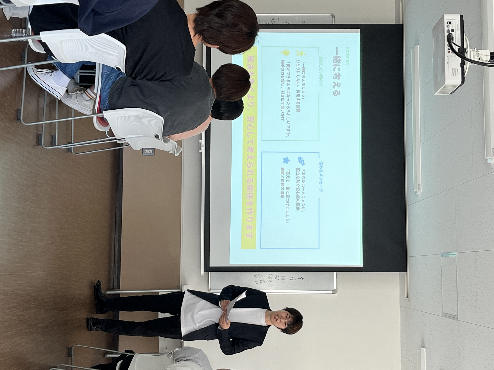
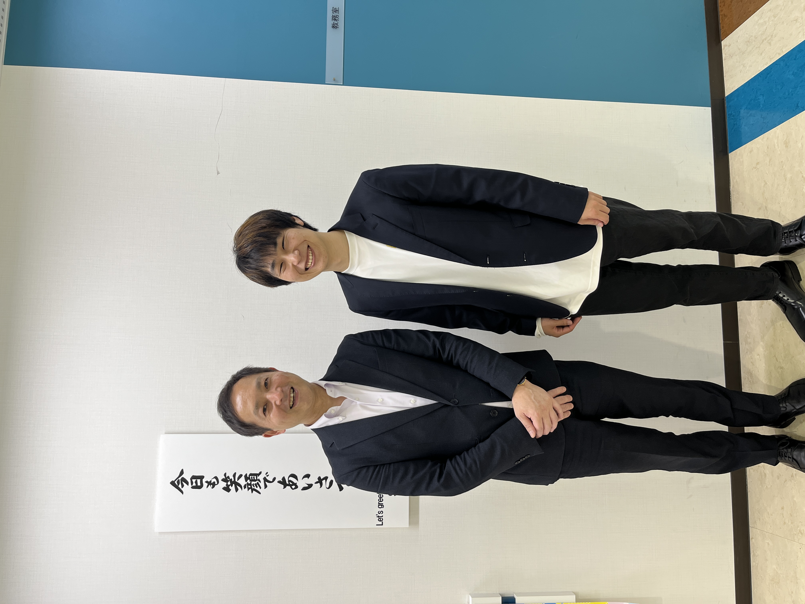

作業療法士を目指す学生の皆さんへ講義を行いました。
開催日：2026年5月14日
開催場所：鳥取市医療看護専門学校




作業療法士（OT）を目指す専門学校の学生の皆さんを対象に、 「話しやすい人になる関わり方 ― 現場で大事なコミュニケーション ―」 をテーマに講義を行いました。
今回の講義では、 「コミュニケーションとは興味を持って相手に接すること」 という考えをもとに、 患者さんや利用者さん、保護者の方との信頼関係の築き方についてお話ししました。
支援の現場では、知識や技術だけでなく、 安心して話せる関係づくりがとても大切になります。
学生の皆さんには、 これからの実習や臨床場面で活かせる 「聞く力」や「寄り添う姿勢」 についてお伝えしました。
真剣にワークへ取り組み、 積極的に意見を交わす学生の皆さんの姿が印象的でした。
今後も現場で役立つ学びを届けていきます。